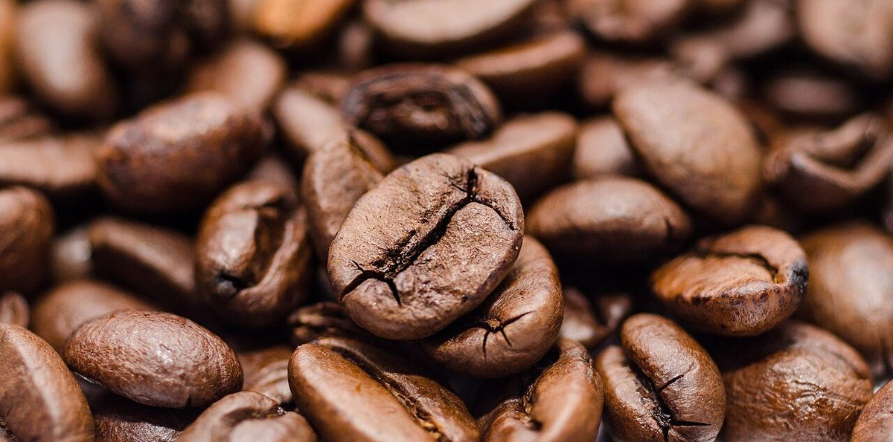

ABOUT / 部位図の話
6つの部位と、1枚の札
家庭や店先にある道具の「部位の配置図」を、ホームページの形にしてみる。この試作のテーマは、自立式デジタルサイネージです。
※ このテーマは制作側の連想で、お店の理念・由来とは無関係です。ブレッド ツクネの紹介文ではありません。
①
表示パネル
映像や案内を映す大きな面。通行する人の目線に向けて、縦長に据えられる。
②
縁取り枠
表示パネルをぐるりと囲む枠。内側の画面と外の空間の境目になる。
③
ポール
パネルを持ち上げる縦の柱。中を配線が通る型が多い。
④
台座
床に置く重たい土台。自立させるため、広く平らにつくられる。
⑤
配線カバー
電源などのケーブルを覆う細いカバー。ポールの背に沿って伸びる。
⑥
通気スリット
パネルの裏側から熱を逃がす細い切れ込み。長い時間つけっぱなしにする機器に付く。


実際に制作する場合は、お店の考えや商品に合わせて、構成・色・文章をあらためて作ります。写真もお店ご提供のものに差し替えます。